AUTOMATIC TRANSMISSION UNIT > DISASSEMBLY |
| 1. REMOVE TRANSMISSION CONTROL SHAFT LEVER RH |
 |
Remove the nut, spring washer and control shaft lever RH.
| 2. REMOVE PARK/NEUTRAL POSITION SWITCH ASSEMBLY |
 |
Using a screwdriver, bend the tabs of the lock washer.
Remove the nut, lock washer and bolt.
Remove the park/neutral position switch.
| 3. REMOVE OIL COOLER TUBE UNION |
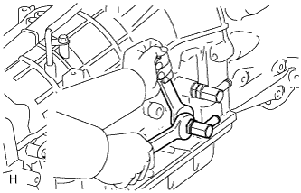 |
Remove the 2 oil cooler tube unions.
Remove the 2 O-rings from the oil cooler tube unions.
| 4. REMOVE SPEED SENSOR |
 |
Remove the 2 bolts and 2 speed sensors.
Remove the 2 O-rings from the sensors.
| 5. REMOVE AUTOMATIC TRANSMISSION BREATHER TUBE |
 |
Remove the 2 bolts.
Remove the breather tube.
Remove the O-ring from the tube.
| 6. REMOVE AUTOMATIC TRANSMISSION HOUSING |
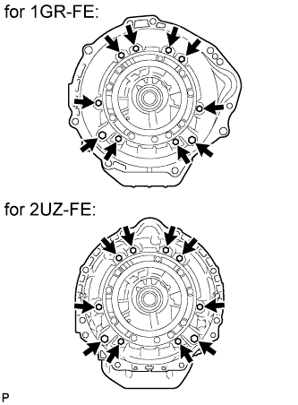 |
Remove the 10 bolts.
Remove the transmission housing.
| 7. REMOVE REAR ADAPTOR TRANSFER |
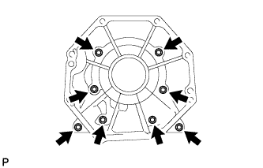 |
Remove the 8 bolts.
Remove the transmission case adapter.
| 8. REMOVE TRANSMISSION CASE ADAPTER REAR OIL SEAL |
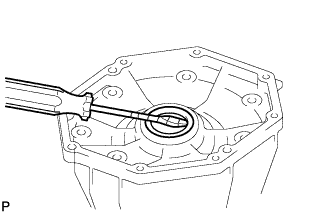 |
Using a screwdriver, pry out the oil seal.
| 9. REMOVE TRANSFER CASE ADAPTER RADIAL BALL BEARING |
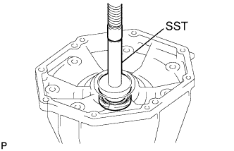 |
Using a screwdriver, remove the snap ring.
Using SST and a press, press out the bearing.
| 10. FIX AUTOMATIC TRANSMISSION CASE SUB-ASSEMBLY |
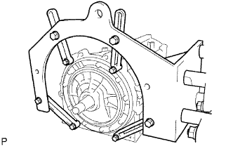 |
Install the transmission case to an overhaul attachment.
| 11. REMOVE AUTOMATIC TRANSMISSION OIL PAN SUB-ASSEMBLY |
Remove the drain plug and 20 bolts.
| 12. INSPECT AUTOMATIC TRANSMISSION OIL PAN SUB-ASSEMBLY |
 |
Remove the magnets, and use them to collect steel particles.
Carefully look at the foreign matter and particles in the pan and on the magnets to anticipate the type of wear you will find in the transmission.
| 13. REMOVE VALVE BODY OIL STRAINER ASSEMBLY |
 |
Turn over the transmission.
Remove the 4 bolts and oil strainer from the valve body.
Remove the O-ring from the oil strainer.
| 14. REMOVE TRANSMISSION WIRE |
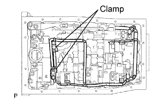 |
Remove the 2 bolts and 2 clamps, and disconnect the 2 ATF temperature sensors.
Disconnect the 7 connectors from the solenoid valves.
 |
Remove the bolt from the case.
Pull the transmission wire out of the transmission case.
Remove the O-ring from the transmission wire.
| 15. REMOVE TRANSMISSION VALVE BODY ASSEMBLY |
Remove the bolt, detent spring cover and detent spring.
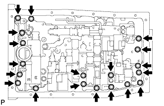 |
Remove the 19 bolts.
Remove the valve body.
| 16. REMOVE TRANSMISSION CASE GASKET |
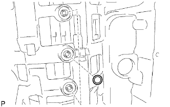 |
Remove the 3 gaskets.
| 17. REMOVE BRAKE DRUM GASKET |
 |
Remove the 3 gaskets.
| 18. REMOVE CHECK BALL BODY |
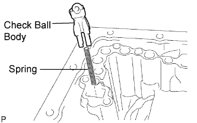 |
Remove the check ball body and spring.
| 19. REMOVE C-2 ACCUMULATOR PISTON |
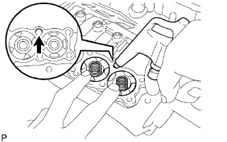 |
Apply compressed air to the oil hole to remove the C-2 accumulator piston and spring.
Remove the 2 O-rings from the piston.
| 20. REMOVE B-3 ACCUMULATOR PISTON |
Apply compressed air to the oil hole to remove the B-3 accumulator piston and spring.
Remove the 2 O-rings from the piston.
| 21. REMOVE C-3 ACCUMULATOR PISTON |
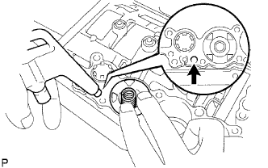 |
Apply compressed air to the oil hole to remove the C-3 accumulator piston and 2 springs.
Remove the 2 O-rings from the piston.
| 22. REMOVE C-1 ACCUMULATOR VALVE |
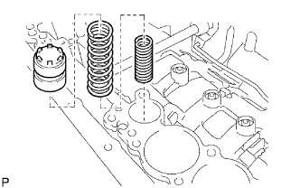 |
Remove the C-1 accumulator valve and 2 springs.
| 23. REMOVE PARKING LOCK PAWL BRACKET |
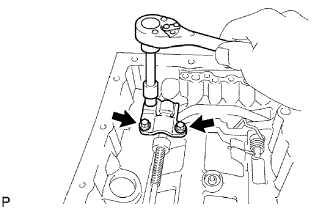 |
Remove the 3 bolts and bracket.
| 24. REMOVE PARKING LOCK ROD SUB-ASSEMBLY |
 |
Disconnect the parking lock rod from the manual valve lever.
| 25. REMOVE PARKING LOCK PAWL SHAFT |
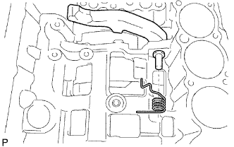 |
Pull out the parking lock pawl shaft from the front side, and then remove the lock pawl and spring.
Remove the E-ring from the shaft.
| 26. REMOVE MANUAL VALVE LEVER SUB-ASSEMBLY |
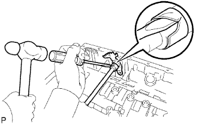 |
Using a hammer and screwdriver, cut off the spacer and remove it from the shaft.
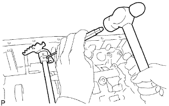 |
Using a pin punch and hammer, tap out the spring pin.
Pull the manual valve lever shaft out through the case, and remove the manual valve lever.
| 27. REMOVE MANUAL VALVE LEVER SHAFT OIL SEAL |
Using a screwdriver, pry out the 2 oil seals.
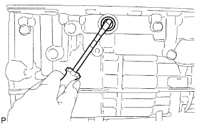 |
| 28. REMOVE OIL PUMP ASSEMBLY |
 |
Remove the 10 bolts.
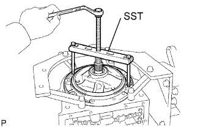 |
Using SST, remove the oil pump.
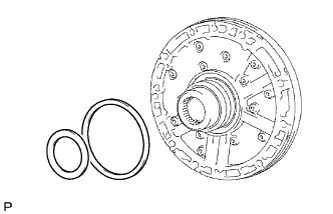 |
Remove the 2 thrust bearing races from the front oil pump.
| 29. REMOVE CLUTCH DRUM AND INPUT SHAFT ASSEMBLY |
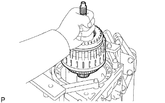 |
Remove the clutch drum and input shaft assembly from the transmission case.
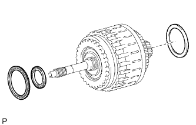 |
Remove the clutch drum thrust washer and 2 thrust needle roller bearings.
| 30. INSPECT NO. 2 1-WAY CLUTCH ASSEMBLY |
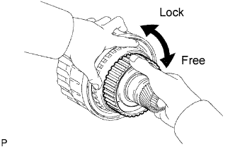 |
Hold the reverse clutch hub and turn the 1-way clutch assembly.
Check that the 1-way clutch turns freely clockwise and locks when turned counterclockwise.
| 31. REMOVE NO. 2 1-WAY CLUTCH ASSEMBLY |
 |
Remove the 1-way clutch and No. 2 clutch drum thrust washer from the clutch drum and input shaft assembly.
| 32. FIX CLUTCH DRUM AND INPUT SHAFT ASSEMBLY |
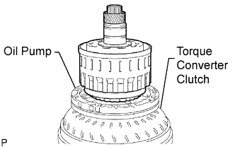 |
Place the oil pump onto the torque converter, and then place the clutch drum and input shaft assembly onto the oil pump.
| 33. REMOVE REVERSE CLUTCH HUB SUB-ASSEMBLY |
 |
Using a screwdriver, remove the snap ring.
 |
Remove the reverse clutch hub sub-assembly, reverse clutch reaction sleeve, clutch cushion, plate reverse clutch flange, 5 reverse clutch discs and 4 clutch plates from the clutch drum.
| 34. REMOVE REVERSE CLUTCH REACTION SLEEVE |
 |
Remove the reverse clutch reaction sleeve from the reverse clutch hub.
| 35. REMOVE REAR CLUTCH DISC |
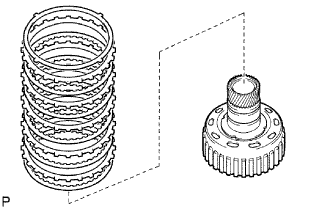 |
Remove the clutch cushion plate, reverse clutch flange, 5 discs and 4 plates from the reverse clutch hub.
| 36. INSPECT REAR CLUTCH DISC |
Replace all discs if one of the following problems is present: 1) a disc, plate or flange is worn or burnt, 2) the lining of a disc is peeled off or discolored, or 3) the grooves or printed numbers have even a little bit of damage.
| 37. INSPECT REVERSE CLUTCH HUB SUB-ASSEMBLY |
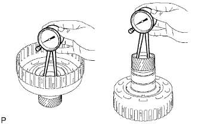 |
Using a dial indicator, measure the inside diameter of the reverse clutch hub bush.
| 38. REMOVE FORWARD CLUTCH HUB SUB-ASSEMBLY |
 |
Remove the forward clutch hub from the clutch drum.
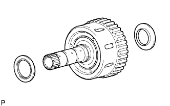 |
Remove the 2 thrust needle roller bearings from the forward clutch hub.
| 39. INSPECT FORWARD CLUTCH HUB SUB-ASSEMBLY |
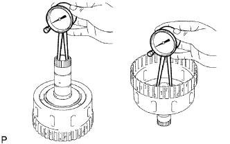 |
Using a dial indicator, measure the inside diameter of the forward clutch hub bush.
| 40. REMOVE MULTIPLE DISC CLUTCH HUB |
 |
Remove the multiple disc clutch hub from the clutch drum.
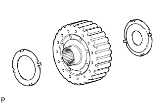 |
Remove the 2 thrust bearing races from the multiple disc clutch hub.
| 41. REMOVE INPUT SHAFT ASSEMBLY |
 |
Remove the thrust needle roller bearing from the clutch drum.
 |
Remove the input shaft assembly from the clutch drum.
| 42. REMOVE INPUT SHAFT OIL SEAL RING |
 |
Remove the 3 oil seal rings from the input shaft.
| 43. REMOVE FORWARD MULTIPLE DISC CLUTCH DISC |
 |
Using a screwdriver, remove the hole snap ring.
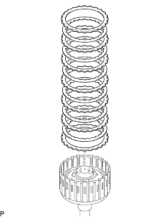 |
for 1GR-FE:
Remove the 2 flanges, 6 discs and 5 plates from the input shaft.
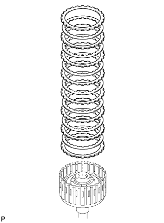 |
for 2UZ-FE:
Remove the 2 flanges, 7 discs and 6 plates from the input shaft.
| 44. INSPECT FORWARD MULTIPLE DISC CLUTCH DISC |
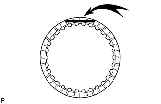 |
Replace all discs if one of the following problems is present: 1) a disc, plate or flange is worn or burnt, 2) the lining of a disc is peeled off or discolored, or 3) the grooves or printed numbers have even a little bit of damage.
| 45. REMOVE NO. 1 CLUTCH BALANCER |
 |
Place SST on the clutch balancer, and compress the return spring with a press.
Using a snap ring expander, remove the snap ring.
 |
Remove the clutch balancer and forward clutch return spring from the input shaft assembly.
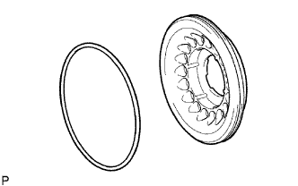 |
Remove the O-ring from the No. 1 clutch balancer.
| 46. INSPECT FORWARD CLUTCH RETURN SPRING SUB-ASSEMBLY |
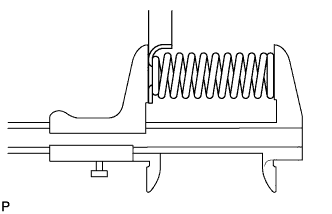 |
Using a vernier caliper, measure the free length of the spring together with the spring seat.
| 47. REMOVE FORWARD CLUTCH PISTON |
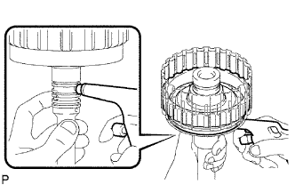 |
Hold the input shaft by hand and apply compressed air (392 kPa (4.0 kgf/cm2, 57 psi)) to the input shaft to remove the forward clutch piston.
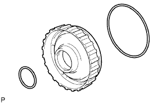 |
Remove the 2 O-rings from the forward clutch piston.
| 48. REMOVE REVERSE CLUTCH FLANGE |
 |
Remove the reverse clutch flange from the clutch drum.
| 49. REMOVE DIRECT CLUTCH DISC |
 |
Using a screwdriver, remove the 2 hole snap rings from the clutch drum.
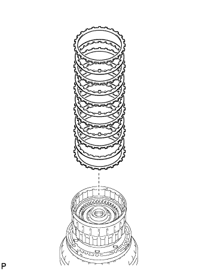 |
for 1GR-FE:
Remove the reverse clutch flange, 5 discs and 5 plates from the clutch drum.
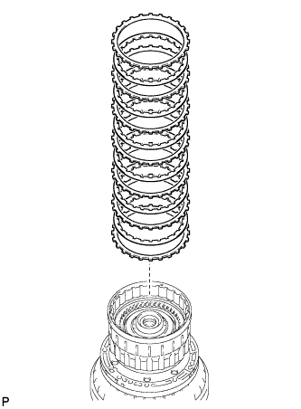 |
for 2UZ-FE:
Remove the reverse clutch flange, 6 discs and 6 plates from the clutch drum.
| 50. INSPECT DIRECT CLUTCH DISC |
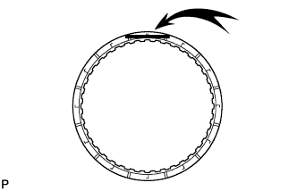 |
Replace all discs if one of the following problems is present: 1) a disc, plate or flange is worn or burnt, 2) the lining of a disc is peeled off or discolored, or 3) the grooves or printed numbers have even a little bit of damage.
| 51. REMOVE NO. 3 CLUTCH BALANCER |
 |
Place SST on the clutch balancer, and compress the return spring with a press.
Using SST, remove the snap ring.
| 52. REMOVE REVERSE CLUTCH RETURN SPRING SUB-ASSEMBLY |
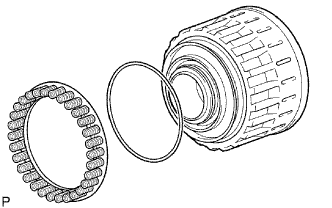 |
Remove the reverse clutch return spring and O-ring from the reverse clutch piston.
| 53. INSPECT REVERSE CLUTCH RETURN SPRING SUB-ASSEMBLY |
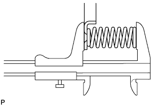 |
Using a vernier caliper, measure the free length of the spring together with the spring seat.
| 54. REMOVE REVERSE CLUTCH PISTON SUB-ASSEMBLY |
 |
Remove the reverse clutch piston sub-assembly from the clutch drum.
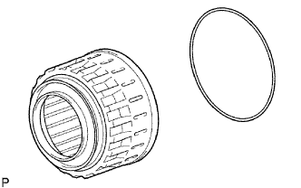 |
Remove the O-ring from the reverse clutch piston.
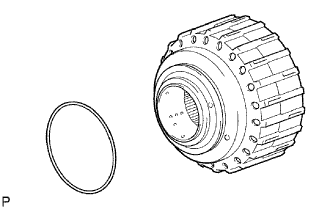 |
Remove the O-ring from the clutch drum.
| 55. REMOVE DIRECT CLUTCH PISTON SUB-ASSEMBLY |
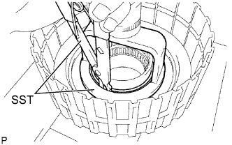 |
Place SST on the direct clutch piston, and compress the return spring with a press.
Using SST, remove the snap ring.
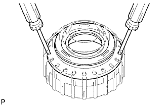 |
Using 2 screwdrivers, remove the direct clutch piston sub-assembly from the clutch drum.
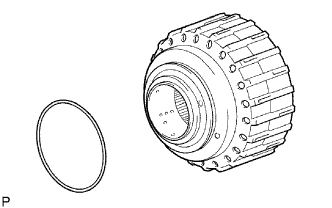 |
Remove the O-ring from the clutch drum.
 |
Remove the No. 2 clutch balancer and direct clutch return spring from the direct clutch piston.
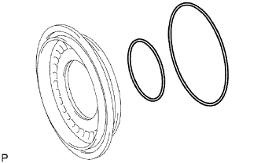 |
Remove the 2 O-rings from the direct clutch piston.
| 56. INSPECT DIRECT CLUTCH RETURN SPRING SUB-ASSEMBLY |
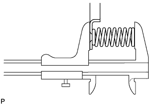 |
Using a vernier caliper, measure the free length of the spring together with the spring seat.
| 57. REMOVE NO. 3 BRAKE SNAP RING |
 |
Using a screwdriver, remove the No. 3 brake snap ring from the case.
| 58. REMOVE NO. 3 BRAKE DISC |
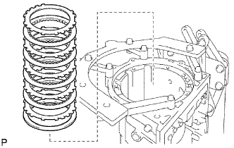 |
Remove the flange, 4 discs, 4 plates and cushion plate from the case.
| 59. INSPECT NO. 3 BRAKE DISC |
 |
Replace all discs if one of the following problems is present: 1) a disc, plate or flange is worn or burnt, 2) the lining of a disc is peeled off or discolored, or 3) the grooves or printed numbers have even a little bit of damage.
| 60. REMOVE 2ND BRAKE PISTON HOLE SNAP RING |
 |
Using SST, remove the snap ring.
| 61. REMOVE 1-WAY CLUTCH ASSEMBLY |
 |
Remove the 1-way clutch assembly and No. 1 planetary carrier thrust washer from the case.
| 62. REMOVE 2ND BRAKE CYLINDER |
 |
Remove the 2nd brake cylinder from the case.
| 63. REMOVE 2ND BRAKE PISTON |
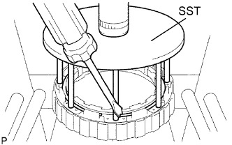 |
Using SST and a press, compress the return spring and remove the snap ring.
Hold the 2nd brake cylinder and apply compressed air (392 kPa (4.0 kgf/cm2, 57 psi)) to the 2nd brake cylinder to remove the 2nd brake piston.
Remove the 2 O-rings from the 2nd brake piston.
| 64. INSPECT NO. 3 BRAKE PISTON RETURN SPRING SUB-ASSEMBLY |
Using a vernier caliper, measure the free length of the spring together with the spring seat.
| 65. REMOVE FRONT PLANETARY GEAR ASSEMBLY |
 |
Remove the front planetary gear assembly and 1-way clutch inner race from the case.
Remove the No. 5 thrust bearing race, thrust needle roller bearing and No. 2 planetary carrier thrust washer from the front planetary gear assembly.
| 66. INSPECT FRONT PLANETARY GEAR ASSEMBLY |
Using a feeler gauge, measure the front planetary pinion gear thrust clearance.
Using a cylinder gauge, measure the inside diameter of the front planetary gear bush.
| 67. INSPECT 1-WAY CLUTCH ASSEMBLY |
Install the 1-way clutch to the 1-way clutch inner race.
Hold the 1-way clutch inner race and turn the 1-way clutch assembly. Check that the 1-way clutch turns freely counterclockwise and locks when turned clockwise.
Remove the 1-way clutch from the 1-way clutch inner race.
| 68. REMOVE FRONT PLANETARY RING GEAR |
 |
Remove the front planetary ring gear and thrust needle roller bearing from the transmission case.
| 69. REMOVE CENTER PLANETARY RING GEAR |
 |
Using a screwdriver, remove the snap ring.
 |
Remove the center planetary ring gear and front planetary ring gear flange from the front planetary ring gear.
| 70. REMOVE NO. 1 BRAKE DISC |
for 1GR-FE:
Remove the flange, 3 discs and 3 plates from the case.
for 2UZ-FE:
Remove the flange, 4 discs and 4 plates from the case.
| 71. INSPECT NO. 1 BRAKE DISC |
Replace all discs if one of the following problems is present: 1) a disc, plate or flange is worn or burnt, 2) the lining of a disc is peeled off or discolored, or 3) the grooves or printed numbers have even a little bit of damage.
| 72. REMOVE BRAKE PISTON RETURN SPRING SNAP RING |
Using a screwdriver, remove the brake piston return spring snap ring from the case.
| 73. REMOVE BRAKE PISTON RETURN SPRING SUB-ASSEMBLY |
 |
Remove the brake piston return spring and No. 1 brake piston with No. 1 brake cylinder from the transmission case.
| 74. INSPECT BRAKE PISTON RETURN SPRING SUB-ASSEMBLY |
Using a vernier caliper, measure the free length of the spring together with the spring seat.
| 75. REMOVE NO. 1 BRAKE PISTON |
Hold the No. 1 brake cylinder and apply compressed air (392 kPa (4.0 kgf/cm2, 57 psi)) to No. 1 brake cylinder to remove the No. 1 brake piston.
Remove the 2 O-rings from the No. 1 brake piston.
| 76. REMOVE NO. 2 BRAKE DISC |
Using a screwdriver, remove the snap ring from the case.
Remove the flange, 3 discs, 3 plates and brake piston return spring from the case.
| 77. INSPECT NO. 2 BRAKE DISC |
 |
Replace all discs if one of the following problems is present: 1) a disc, plate or flange is worn or burnt, 2) the lining of a disc is peeled off or discolored, or 3) the grooves or printed numbers have even a little bit of damage.
| 78. INSPECT NO. 2 BRAKE PISTON RETURN SPRING SUB-ASSEMBLY |
Using a vernier caliper, measure the free length of the spring together with the spring seat.
| 79. REMOVE NO. 2 BRAKE PISTON |
Apply compressed air (392 kPa (4.0 kgf/cm2, 57 psi)) to the transmission case to remove the No. 2 brake piston.
Remove the 2 O-rings from the No. 2 brake piston.
| 80. REMOVE CENTER PLANETARY GEAR ASSEMBLY |
 |
Remove the No. 6 thrust bearing race, center planetary gear and planetary sun gear from the case.
| 81. INSPECT CENTER PLANETARY GEAR ASSEMBLY |
Using a feeler gauge, measure the center planetary pinion gear thrust clearance.
| 82. REMOVE INTERMEDIATE SHAFT |
Using a screwdriver, remove the snap ring from the case.
 |
Remove the intermediate shaft with No. 3 1-way clutch assembly from the case.
| 83. INSPECT NO. 3 1-WAY CLUTCH ASSEMBLY |
Hold the rear planetary ring gear flange and turn the 1-way clutch. Check that the 1-way clutch turns freely counterclockwise and locks when turned clockwise.
| 84. REMOVE NO. 3 1-WAY CLUTCH ASSEMBLY |
 |
Remove the No. 3 1-way clutch assembly and 1-way clutch inner race from the intermediate shaft.
| 85. REMOVE REAR PLANETARY RING GEAR FLANGE SUB-ASSEMBLY |
Remove the planetary ring gear flange, No. 7 thrust bearing race, thrust needle roller bearing and No. 8 thrust bearing race from the intermediate shaft.
| 86. INSPECT REAR PLANETARY RING GEAR FLANGE SUB-ASSEMBLY |
Using a dial indicator, measure the inside diameter of the rear planetary ring gear bush.
| 87. INSPECT INTERMEDIATE SHAFT |
Using a dial indicator, measure the intermediate shaft runout.
Using a micrometer, measure the diameter of the intermediate shaft at the positions shown in the diagram.
| 88. REMOVE BRAKE PLATE STOPPER SPRING |
 |
| 89. REMOVE NO. 4 BRAKE DISC |
Remove the 7 plates, 8 discs and 2 flanges from the case.
| 90. INSPECT NO. 4 BRAKE DISC |
 |
Replace all discs if one of the following problems is present: 1) a disc, plate or flange is worn or burnt, 2) the lining of a disc is peeled off or discolored, or 3) the grooves or printed numbers have even a little bit of damage.
| 91. REMOVE REAR PLANETARY GEAR ASSEMBLY |
 |
Remove the rear planetary gear assembly from the case.
Remove the 2 thrust needle roller bearings from the rear planetary gear.
 |
Remove the No. 9 thrust bearing from the case.
| 92. INSPECT REAR PLANETARY GEAR ASSEMBLY |
Using a feeler gauge, measure the rear planetary pinion gear thrust clearance.
Using a dial indicator, measure the inside diameter of the rear planetary gear bush.
| 93. REMOVE 1ST AND REVERSE BRAKE RETURN SPRING SUB-ASSEMBLY |
Place SST on the spring retainer and compress the brake return spring.
Using SST, remove the snap ring and brake return spring.
| 94. INSPECT 1ST AND REVERSE BRAKE RETURN SPRING SUB-ASSEMBLY |
Using a vernier caliper, measure the free length of the spring together with the spring seat.
| 95. REMOVE 1ST AND REVERSE BRAKE PISTON |
Apply compressed air (392 kPa (4.0 kgf/cm2, 57 psi)) to the transmission case to remove the 1st and reverse brake piston.
Remove the O-ring from the 1st and reverse brake piston.
| 96. REMOVE BRAKE REACTION SLEEVE |
Using SST, remove the reaction sleeve.
Remove the O-ring from the reaction sleeve.
| 97. REMOVE NO. 4 BRAKE PISTON |
Using SST, remove the brake piston.
Remove the 2 O-rings from the brake piston.